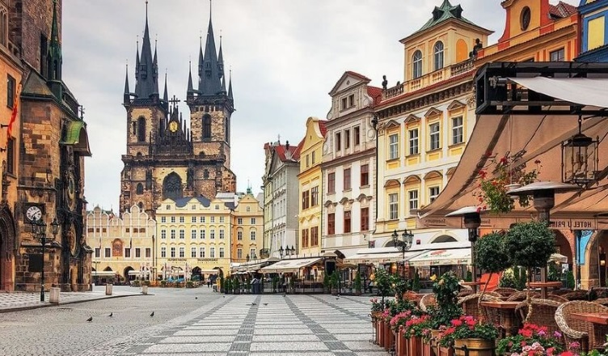

Прага

Прага — столиця Чехії, місто на річці Влтава з надзвичайно добре збереженим історичним центром. Готика, бароко й модерн тут сусідять на кожній вулиці.
Чому я обрав це місто
Прага створена для піших прогулянок: старі площі, мости, затишні кав'ярні й пивні. До того ж вона компактна й доступна, тож багато можна побачити за кілька днів.
Цікаві факти
- Празький Град вважається одним із найбільших замкових комплексів у світі.
- Будівництво Карлового мосту почалося в 1357 році.
- Астрономічний годинник Орлой на Староміській площі працює з XV століття.
Визначні місця
- Празький Град і собор Святого Віта
- Карлів міст
- Староміська площа та Орлой
- Вацлавська площа
- Пагорб Петршін
Моя оцінка: 9/10